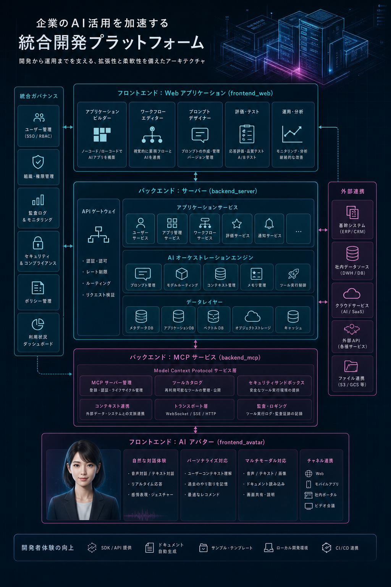

FastAPI + SQLite + Vue 3 を軸に、業務システム実装例と AI 実験基盤をひとつにまとめたのが AiDiy です。
AiDiy は日本語を第一言語とするフルスタック業務管理システム開発フレームワーク / テンプレート。
権限、マスタ、トランザクション、スケジューラ、在庫管理の実装例を含む。
AI、音声、画像、Code CLI、MCP を統合する実験基盤でもある。
AiDiy は、日本語を第一言語とするフルスタック業務管理システムの開発フレームワーク / テンプレート。
FastAPI + SQLite + Vue 3 による実用的な業務管理テンプレートを提供する。